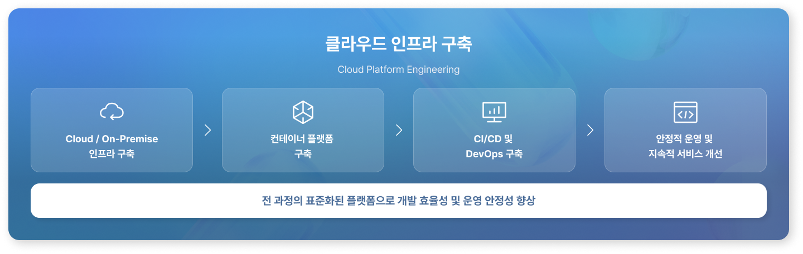
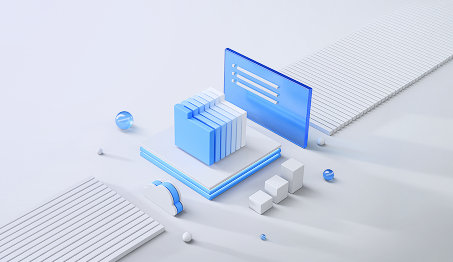
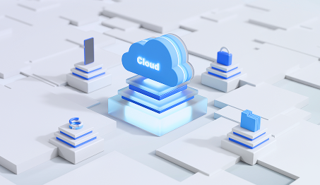

<!-- Header -->
<%- include('../_ejs/top.ejs', {
    title: "Cloud 플랫폼 인프라",
    description: "전략 설계부터 구현까지 통합된 구조로 비즈니스 운영 전반을 하나의 흐름으로 완성하여 운영 효율성과 확장성을 확보합니다.",
    url: "../../"
}) %>

<!-- 레이아웃 -->
<div class="lytLayout">
    <div class="layoutArea">

        <!-- 상단영역 -->
        <div class="layoutTop">
            <!-- Top -->
            <%- include('../_ejs/gnb.ejs', {
                url: "../"
            }) %>
        </div>
        <!-- //상단영역 -->

        <!-- 중단영역 -->
        <div class="layoutContainer" id="container" tabindex="-1">

            <!-- 서브 콘텐츠 영역 -->
            <div class="layoutSubCont">

                <!-- 서브 컨텐츠 내용이 들어오는 영역-->
                <!-- 서브 상단 -->
                <%- include('../_ejs/sub_nav.ejs', {
                    part: "top",
                    group: "service",
                    current: "cloud_infra",
                    url: "../"
                }) %>

                <!-- 서브 컨텐츠 -->
                <div class="cptContGroup services01">
                    <div class="contGroupArea">
                        <%- include('../_ejs/sub_nav.ejs', {
                    part: "tab",
                    group: "service",
                    current: "cloud_infra",
                    url: "../"
                }) %>

                        <div class="section section01 w1600">
                            <p class="smTxt">
                                Cloud Platform Engineering 
                            </p>

                            <h2 class="bgTit">
                                클라우드 기반의 안정적이고 <br/>확장 가능한 플랫폼 구축
                            </h2>

                            <p class="desc">
                                인프라부터 컨테이너 플랫폼, DevOps 체계까지 표준화된 클라우드 플랫폼을 <br/>설계·구축하여 개발부터 운영까지 일관된 환경을 제공합니다.
                            </p>

                            <div class="imgTxt type02">
                                <ul>
                                    <li>
                                        클라우드 플랫폼은 단순한 인프라가 아니라 <br/>서비스를 안정적으로 운영하기 위한 <br/>기반입니다.
                                    </li>
                                    <li>
                                        최근 시스템은 빠른 개발뿐만 아니라 안정적인 운영과 지속적인 확장을 지원하는 플랫폼이 <br/>요구됩니다. 하지만 많은 기업들은 개발 환경과 운영 환경이 분리되어 있어 배포 지연, 운영 오류, 환경 차이 등의 문제가 반복적으로 발생하고 있습니다.
                                        <br/><br/>
                                        오픈브릭스는 Azure를 중심으로 AWS, NHN Cloud 및 On-Premise 환경까지 <br/>고객의 비즈니스와 운영 환경에 적합한 클라우드 플랫폼을 설계하고 구축합니다. 또한 컨테이너 기반 운영 환경과 DevOps 체계를 통해 개발부터 운영까지 일관된 플랫폼을 제공합니다.
                                    </li> 
                                </ul>
                            </div>
                        </div>

                        <div class="section section02 w1400">
                            <p class="contTit">클라우드 인프라 구축</p>
                            <p class="contDesc">클라우드 플랫폼은 단순한 인프라가 아니라 서비스를 안정적으로 운영하기 위한 기반입니다.</p>

                            <div class="cloud_infra_img">
                                
                                
                                
                            </div>
                        </div> 

                        <div class="section section05 w1400">
                            <div class="leftBox">
                                <p class="title">클라우드 인프라 구축 철학</p>
                                <p class="desc">
                                    오픈브릭스는 클라우드 플랫폼을 서버 구축이 아닌 운영 가능한 서비스 환경으로 바라봅니다.
                                </p>
                                

                                <p class="point">
                                    클라우드 플랫폼은 프로젝트와 함께 끝나는 구축 결과물이 아니라, <br/>
                                    <span>서비스와 함께 발전하는 기업의 디지털 경쟁력으로 제공합니다.</span>
                                </p>
                            </div>
                            <div class="rightBox">
                                <div class="list">
                                    <ul>
                                        <li>
                                            <span>01</span>
                                            <p>안정적인 서비스 운영 기반 구축</p>
                                        </li>
                                        <li>
                                            <span>02</span>
                                            <p>표준화된 개발 및 운영 환경 제공</p>
                                        </li>
                                        <li>
                                            <span>03</span>
                                            <p>자동화를 통한 운영 효율성 보장</p>
                                        </li>
                                        <li>
                                            <span>04</span>
                                            <p>변화와 확장에 유연한 플랫폼 구현</p>
                                        </li>
                                        <li>
                                            <span>05</span>
                                            <p>DevOps 기반의 지속 가능한 운영 체계 마련</p>
                                        </li> 
                                    </ul>
                                </div>
                            </div>
                        </div>

                        <div class="section section07 dark">
                            <p class="smTxt">
                                Why Cloud App Engineering
                            </p>

                            <h2 class="bgTit">
                                플랫폼 서비스 구성
                            </h2>

                            <p class="desc">
                                각 상품은 개별적으로 선택하여 구축할 수 있으며, 필요에 따라 상위 상품으로 확장할 수 있습니다. 
                            </p>

                            <div class="cardList">
                                <ul class="noWrap">
                                    <li>
                                        <div class="group">
                                            <span class="smT">Layer 01</span>
                                            <p class="title">Infrastructure Foundation <br/>Cloud 및 On-Premise 초기 구축</p>
                                            <p class="desc">Azure, AWS, NHN Cloud 또는 On-Premise 환경의 기본 인프라를 설계·구축하여 안정적인 서비스 운영 기반을 제공합니다.</p>
                                        </div>
                                        
                                    </li>
                                    <li>
                                        <div class="group">
                                            <span class="smT">Layer 02</span>
                                            <p class="title">Container Platform <br/>컨테이너 개발 환경 및 운영 구성</p>
                                            <p class="desc">Docker와 Kubernetes 기반의 표준 개발·운영 환경을 구축하여 배포 효율성과 운영 안정성을 높입니다.</p>
                                        </div>
                                        
                                    </li>
                                    <li>
                                        <div class="group">
                                            <span class="smT">Layer 03</span>
                                            <p class="title">DevOps & CI/CD Platform <br/>애플리케이션 개발 관리 및 CI/CD</p>
                                            <p class="desc">형상관리와 CI/CD 자동화 환경을 구축하여 개발부터 테스트, 배포까지 지속 가능한 DevOps 체계를 제공합니다.</p>
                                        </div>
                                        
                                    </li>
                                </ul> 
                            </div>
                        </div>

                        
                         <div class="section section06 w1600">
                            <p class="title">최적의 클라우드 플랫폼 제공</p>
                            <p class="desc">
                                고객의 환경과 운영 전략에 맞는 최적의 클라우드 플랫폼을 제공합니다.  
                            </p>

                            <div class="slideControl">
                                <button type="button" class="prev"><span>이전</span></button>
                                <button type="button" class="next"><span>다음</span></button>
                            </div>

                            <div class="si_slide type02">
                                <div class="swiper-container">
                                    
                                    <div class="swiper-wrapper">
                                        <div class="swiper-slide">
                                            <div class="slideInner">
                                                
                                                <div class="slideTxtBox">
                                                    <p class="slideTit">Infrastructure Foundation</p>
                                                    <p class="slideDesc">
                                                        <span>Azure, AWS, NHN Cloud 및 On-Premise 환경 구축 </span>
                                                        <span>네트워크 및 보안 구성 </span>
                                                        <span>운영 기반 인프라 설계</span>
                                                    </p>
                                                </div>
                                            </div>
                                        </div>
                                        <div class="swiper-slide">
                                            <div class="slideInner">
                                                
                                                <div class="slideTxtBox">
                                                    <p class="slideTit">Container Platform</p>
                                                    <p class="slideDesc">
                                                        <span>Docker 기반 컨테이너 환경 구축</span>
                                                        <span>Kubernetes 클러스터 구성</span>
                                                        <span>컨테이너 운영 및 관리 체계 구축</span>
                                                    </p>
                                                </div>
                                            </div>    
                                        </div>
                                        <div class="swiper-slide">
                                            <div class="slideInner">
                                                
                                                <div class="slideTxtBox">
                                                    <p class="slideTit">DevOps & CI/CD Platform</p>
                                                    <p class="slideDesc">
                                                        <span>Git 기반 형상관리 환경 구축</span>
                                                        <span>CI/CD 자동화 파이프라인 구축</span>
                                                        <span>배포 자동화 및 운영 표준화</span>
                                                    </p>
                                                </div>
                                            </div>    
                                        </div>
                                        <div class="swiper-slide">
                                            <div class="slideInner">
                                                
                                                <div class="slideTxtBox">
                                                    <p class="slideTit">Platform Operation Support</p>
                                                    <p class="slideDesc">
                                                        <span>플랫폼 운영 지원</span>
                                                        <span>모니터링 및 로그 관리</span>
                                                        <span>기술 지원 및 운영 안정화</span>
                                                    </p>
                                                </div>
                                            </div>    
                                        </div> 
                                    </div>
                                </div>
                            </div>
                        </div>

                        <div class="csBanner">
                            <div class="left">
                                <span class="smT">OPENBRICKS</span>
                                <p class="title">
                                    Beyond Systems, <br/>We Connect Business
                                </p>
                                <p class="desc">
                                    오픈브릭스는 AX 기반 시스템 통합으로 <br/>시스템을 넘어, 비즈니스를 연결합니다.
                                </p> 
                            </div>
                            <div class="right">
                                <div class="btn">
                                    <button type="button" class="int" onclick="fileDownload()"><span>회사소개서</span></button>
                                    <button type="button" class="faq" onclick="location.href='../contact/contact_us.html'"><span>문의하기</span></button>
                                </div>
                            </div>
                        </div>
                    </div>
                </div>
                <!-- //서브 컨텐츠 내용이 들어오는 영역-->
                
            </div>
            <!-- //서브 콘텐츠 영역 -->

        </div>
        <!-- //중단영역 -->

        <!-- 하단영역 -->
        <div class="layoutFooter">
            <!-- Footer -->
            <%- include('../_ejs/footer.ejs', {
                url: "../../"
            }) %>
        </div>
        <!-- //하단영역 -->

    </div>
</div>


<!-- Bottom -->
<%- include('../_ejs/bottom.ejs', { }) %>
